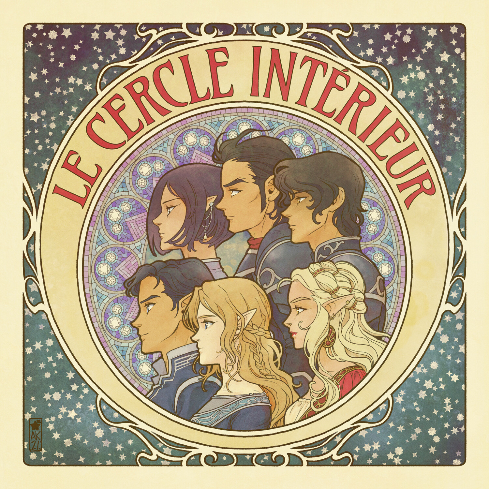

Corte noturna
O Inner Circle (Círculo Íntimo) da Corte Noturna é o grupo de elite de aliados, amigos e conselheiros de mais alta confiança de Rhysand, o Grão-Senhor da Corte Noturna na série literária Corte de Espinhos e Rosas (ACOTAR), de Sarah J. Maas.
Diferente de outras cortes de Prythian, que são governadas por hierarquias rígidas e medo, o Inner Circle funciona como uma família disfuncional, mas profundamente leal. Eles operam a partir de Velaris (a Cidade da Luz Estelar), governando com base no respeito mútuo, na igualdade e em um desejo feroz de proteger seu povo.